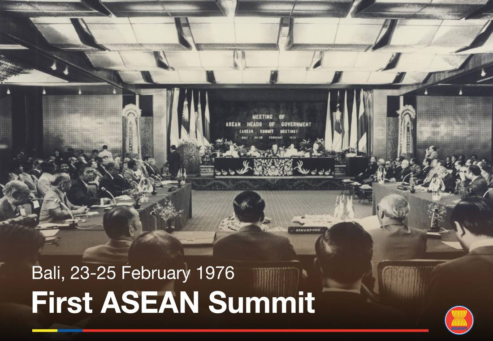
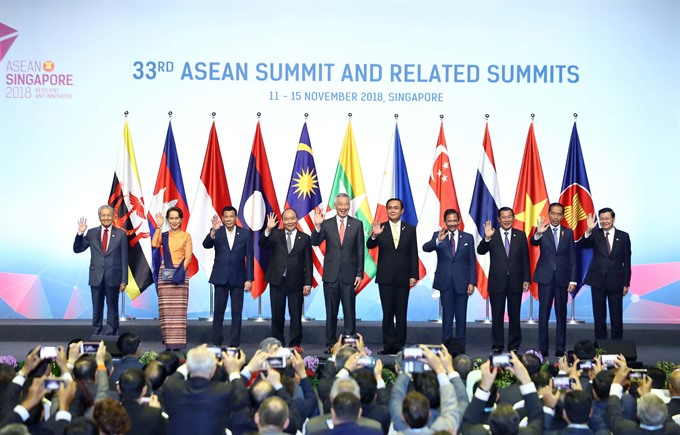

ASEAN
About
The Association of Southeast Asian Nations, commonly abbreviated as ASEAN, is a political and economic union of 10 states in Southeast Asia. ASEAN was created to promote regional peace, stability, and cooperation. Over the years, it has grown to become a significant force in fostering economic, political, and cultural cooperation within the region and with external partners.
History
Foundation and Early Years (1967–1975)
ASEAN was founded on August 8, 1967, with the signing of the Bangkok Declaration by the five founding members: Indonesia, Malaysia, Philippines, Singapore, and Thailand. The primary objective was to promote regional stability amidst the growing tension in Southeast Asia, particularly with the Vietnam War and the rise of communism in the region.

Expansion and Political Consolidation (1976–1990s)
The Bali Summit of 1976 marked a significant milestone, where ASEAN leaders signed the Treaty of Amity and Cooperation (TAC), reinforcing the principles of non-interference and peaceful resolution of disputes.
In the 1980s and 1990s, ASEAN sought to expand its membership to include all Southeast Asian nations. On 7 January 1984, Brunei became ASEAN's sixth member and on 28 July 1995, following the end of the Cold War, Vietnam joined as the seventh member. Laos and Myanmar (formerly Burma) joined two years later on 23 July 1997. Cambodia was to join at the same time as Laos and Myanmar, but a Cambodian coup in 1997 and other internal instability delayed its entry.[37] It then joined on 30 April 1999 following the stabilization of its government.
Recent Developments (2010s–Present)
The ASEAN Charter (2008) gave the organization formal legal status, strengthening its governance. In 2015, ASEAN launched the ASEAN Economic Community (AEC) to enhance regional economic integration. ASEAN now plays a key role in addressing regional issues like security in the South China Sea, sustainable development, and crisis management, including during the COVID-19 pandemic.
Member states
- Brunei
- Cambodia
- Indonesia
- Laos
- Malaysia
- Myanmar
- Philippines
- Singapore
- Thailand
- Vietnam